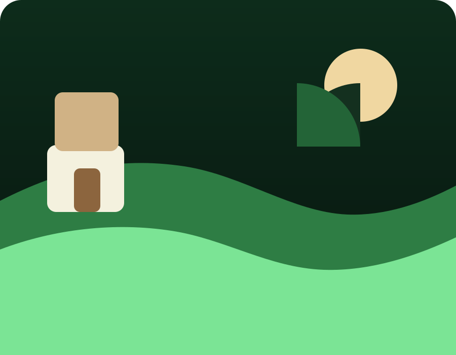
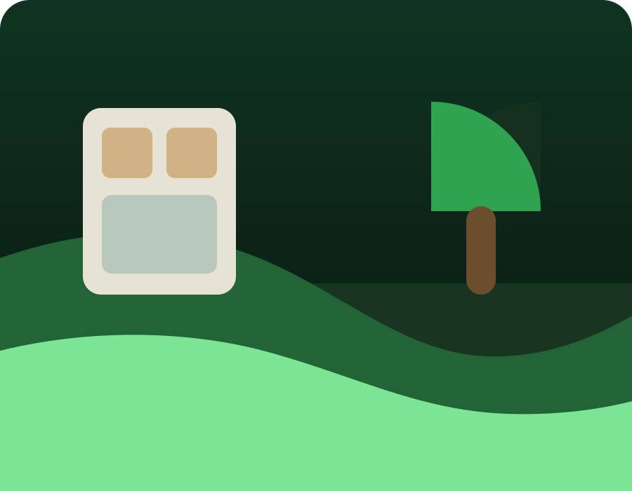
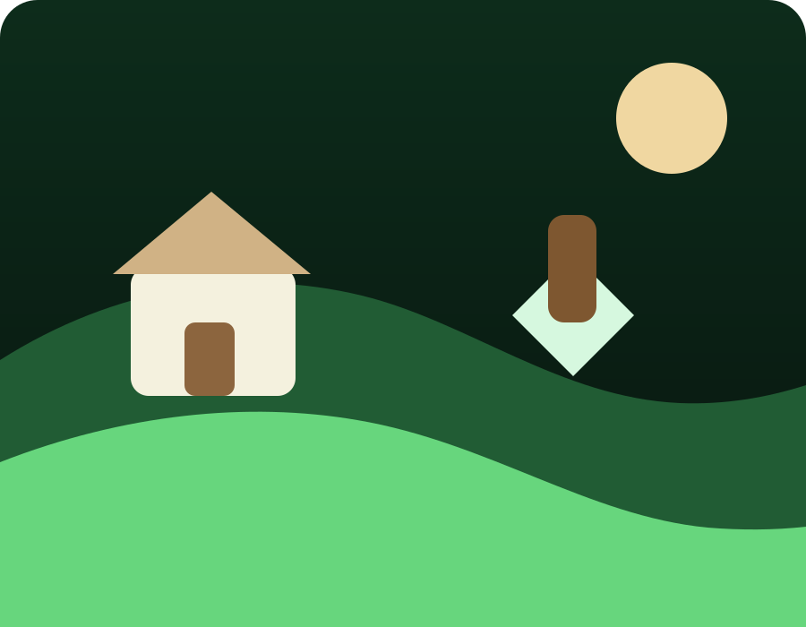

Dokonale vedený trávník
Precizní výsledek při pravidelném sečení.
Galerie

Precizní výsledek při pravidelném sečení.
Nový charakter prostoru a čisté linie.
Bezpečné řešení složitých zásahů.

Stabilně upravený vzhled během sezony.

Čistý a reprezentativní dojem na první pohled.